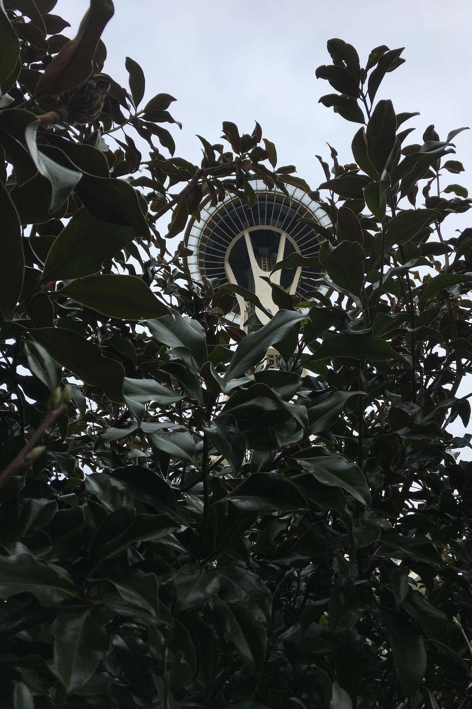
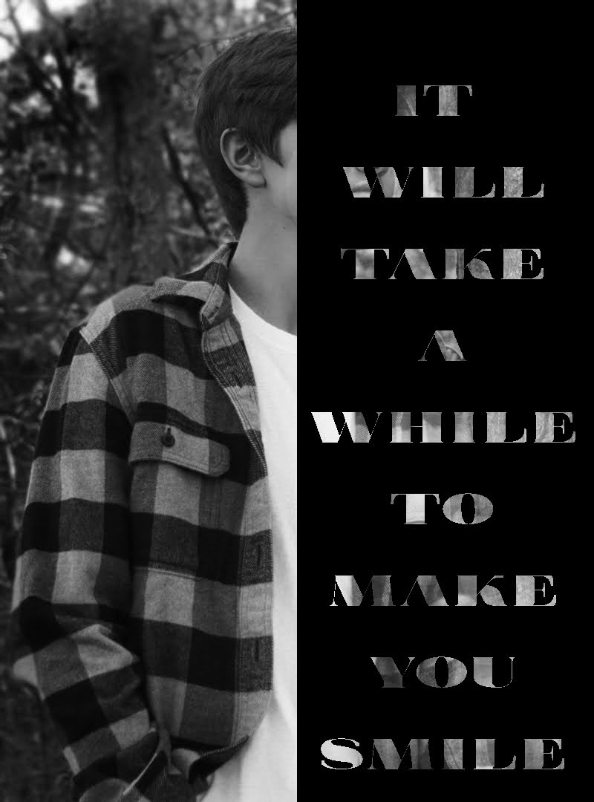

My Works
1 / 20

This is one of my favorite projects I have worked on as well as the most time consuming. It was for my album cover assignment for my photograpahy class. This is one of the projects that helped improve my use of different tools and layers in photoshop.
2 / 20
This is the final product for the album cover project.
3 / 20
This was another project I created for the album cover assignment. This project taught me how to use the tools in photoshop to create the ripped paper look for the photo.
4 / 20
This is the final product for this photo for the album cover project.
5 / 20

This is the final photo for the album cover project. This photo really helped me use and create cool and realistic lighting.
6 / 20
This is the final product with the previous photo for the album cover project.
7 / 20

This is from my spring break trip to Seattle. This trip I experimented a lot and was trying new and different angles.
8 / 20
This was a long exposure of Snoqualmie Falls in Washington.
9 / 20
This is a photo of the Suzzallo and Allen Libraries at the Univeristy of Washington in Seattle Washington.
10 / 20
This is a photo of Maverick from Cedar Point.
11 / 20
This is the loop element from Rougarou from Cedar Point
12 / 20

This was a quick project for my photography class. We had to choose lyrics from a song and put them over an image. The song that I chose was Space Song by Beach House.
13 / 20
This is an close up image of my truck while driving up Mount Washington in New Hampshire
14 / 20
This was a quick snapshot while at Hampton Beach in New Hampshire
15 / 20
This project for my photography class was to make a portrait of someone or something look more animated. I decided to add myself onto a GTA5 loading screen.
16 / 20
For this photo, I was playing around and experimenting with low angles.
17 / 20

This was a low angle portrait of my friend while we were driving.
18 / 20
This is a black and white portait that I took of myself during the COVID lockdown
19 / 20
This was a photo of my friends and I on the coast of Maine. With this photo, I edited it to give it a more grainy and beautiful look.
20 / 20
This was a photo that I took and edited of Maxxforce at Six Flags Great America.